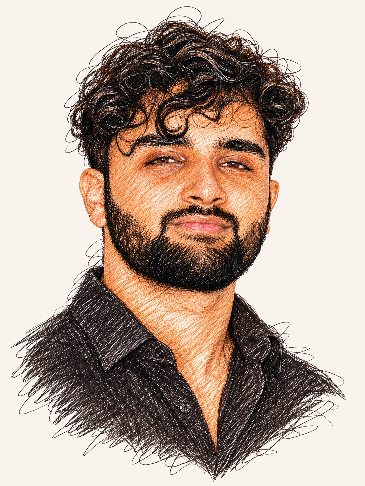

Ideas are easy. Building is the fun part.
From LEGO creations to building products, I've always enjoyed figuring out how things work. Today, I'm exploring the intersection of healthcare, technology, business, and entrepreneurship.
Email me ↗
01 — ABOUT
My journey has taken a few turns. I began in health sciences and medical education, drawn to understanding the human body and the complexity of healthcare. Over time, I became equally curious about the systems around it: how people learn, how problems are solved, and how good ideas become useful products.
That curiosity eventually led me towards digital business and entrepreneurship at IIM Bangalore. Today, I'm interested in building at the intersection of healthcare and technology, with a particular fascination for education and products that make complicated things easier to understand.
Different interests. One common thread: building things.
02 — SELECTED WORK
Ideas turned into experiments and products.
Omento is a medical education platform designed to help students bridge the gap between theoretical knowledge and practical application.
The vision is to create a connected learning experience for medical students, bringing together structured learning modules, explanatory videos, question banks, flashcards, and spaced-repetition revision.
Rather than treating these as disconnected study tools, Omento aims to bring learning, practice, and recall together throughout medical school, while also supporting preparation for postgraduate examinations.
The product is currently in MVP development. Its prototype is being tested by approximately 30 medical students, whose feedback is helping shape the product and its learning experience.
MY ROLE
Product strategy · Business development · Marketing · Operations · MVP development
Visit Omento.in ↗03 — EXPERIENCE
Co-building a medical education platform. My work spans product strategy, business development, marketing, operations, and bringing the MVP from an idea towards a product students can use.
An earlier entrepreneurial experiment that focused on strengthening medical skills for medical students through interactive history taking and clinical exams using AI. It became part of my journey into building products, exploring ideas, and understanding what it takes to turn an idea into something real.
04 — EDUCATION
Indian Institute of Management Bangalore
Pre-clinical Medical Sciences
American University of Antigua
American University of Antigua
Dean's List — Pre-med, Term 2
American University of Antigua
05 — OUTSIDE WORK
Drums
Chess
Reading
Binge-watching movies and shows :)
06 — GET IN TOUCH
Interested in healthcare, technology, entrepreneurship, or building something meaningful? I'd love to hear from you.
Email me ↗nidheeshbharadwaj.banda26@iimb.ac.in